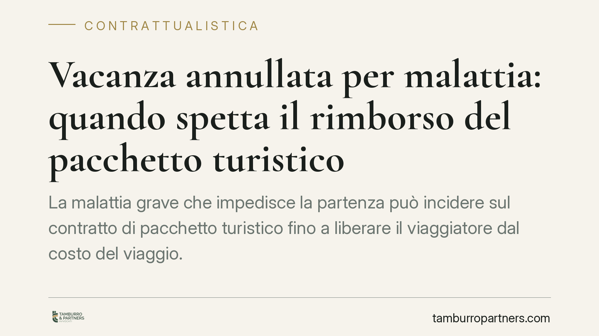

Vacanza annullata per malattia: quando spetta il rimborso del pacchetto turistico
La malattia grave che impedisce la partenza può incidere sul contratto di pacchetto turistico fino a liberare il viaggiatore dal costo del viaggio. Ma il confine tra recesso con penale e scioglimento con rimborso non è automatico: dipende dalla disciplina applicata, dalla prova dell'impedimento e dalle clausole sottoscritte. Vediamo come si orienta il quadro normativo e cosa conviene fare.

Il caso tipico
Un viaggiatore prenota un pacchetto turistico. Pochi giorni prima della partenza una malattia grave, propria o di un familiare, rende impossibile viaggiare. L'operatore applica le penali di cancellazione previste dal contratto. Il viaggiatore chiede invece la restituzione integrale di quanto versato. Chi ha ragione dipende dalla qualificazione giuridica dell'impedimento e dalla disciplina applicabile.
Inquadramento normativo
La materia dei pacchetti turistici è regolata in via primaria dal Codice del Turismo (D.Lgs. 79/2011), che recepisce la direttiva UE 2015/2302. Due norme rilevano in modo particolare.
L'art. 41 disciplina il recesso del viaggiatore prima dell'inizio del pacchetto: di regola l'operatore può chiedere spese di recesso adeguate e giustificabili (le cosiddette penali). Lo stesso articolo prevede però un'ipotesi di recesso senza spese quando ricorrono "circostanze inevitabili e straordinarie" che si verificano nel luogo di destinazione e incidono in modo sostanziale sull'esecuzione del pacchetto. Questa seconda fattispecie è pensata per eventi esterni (crisi sanitarie, calamità, instabilità politica), non per impedimenti personali del viaggiatore.
Il malessere personale resta dunque fuori dal recesso senza penali dell'art. 41. Per ricondurvi un diritto al rimborso, la giurisprudenza di legittimità ha seguito una via diversa: quella della causa concreta del contratto e dell'impossibilità di utilizzazione della prestazione. In contratti con una precisa finalità turistica, se un evento sopravvenuto e non imputabile rende la finalità irrealizzabile per il creditore, il contratto può sciogliersi liberando le parti dalle rispettive prestazioni (orientamento riconducibile, tra le altre, a Cass. n. 26958/2007). In questa cornice l'art. 1463 c.c. sull'impossibilità sopravvenuta viene richiamato non in senso stretto — l'impossibilità non colpisce la prestazione dell'operatore — ma come base per il venir meno dell'interesse che giustifica lo scambio.
> Nota operativa: eventuali pronunce di legittimità recenti su casi analoghi vanno verificate nel loro esatto estremo (numero e anno) prima di farvi affidamento. Il quadro normativo resta quello sopra descritto.
Recesso con penale e scioglimento: due strade diverse
La distinzione è decisiva.
Nel recesso volontario il viaggiatore sceglie di non partire: l'operatore può legittimamente trattenere le spese di recesso previste in contratto, purché ragionevoli.
Nello scioglimento per impossibilità di utilizzazione della prestazione, invece, l'impedimento grave e incolpevole fa venir meno la finalità del contratto: in questa prospettiva non si applicano le penali di cancellazione, perché non c'è un recesso ma la caduta della causa concreta del rapporto, con conseguente obbligo di restituzione di quanto versato.
Va segnalato che la prevalenza dello scioglimento sulle clausole penali non è un automatismo pacifico: dipende dalla qualificazione del singolo caso e dalla valutazione del giudice. Affermare che l'art. 1463 c.c. abbia natura imperativa e travolga sempre le penali sarebbe una semplificazione eccessiva.
L'onere della prova
Chi invoca l'impedimento deve dimostrarlo. Non basta un generico certificato di malattia: serve documentazione medica dettagliata, che attesti la gravità della patologia, la sua insorgenza in prossimità della partenza e l'effettiva incompatibilità con il viaggio programmato. Più l'impedimento è circostanziato, più solida è la posizione nei confronti dell'operatore e, in caso di contenzioso, davanti al giudice.
Il rapporto con le polizze di annullamento
Molti pacchetti includono o propongono una polizza annullamento viaggio. È uno strumento distinto dai rimedi contrattuali: copre, nei limiti previsti, il rimborso delle somme perse per cause tassativamente indicate in polizza, spesso con franchigie ed esclusioni. Attivare la polizza non preclude di far valere i diritti verso l'operatore, ma le due vie vanno coordinate: conviene leggere con attenzione condizioni, massimali e termini di denuncia del sinistro.
Cosa fare in concreto
- Conservare tutta la documentazione medica fin dal primo accertamento: diagnosi, prescrizioni, eventuale ricovero, con date precise.
- Comunicare per iscritto l'impedimento all'operatore senza ritardo, chiedendo espressamente lo scioglimento del contratto e il rimborso, non la semplice cancellazione.
- Rileggere il contratto e le condizioni generali: verificare clausole di recesso, penali applicate ed eventuale polizza annullamento inclusa.
- Denunciare tempestivamente il sinistro alla compagnia, se esiste una polizza, rispettando termini e modalità previsti.
- Richiedere una valutazione professionale quando l'operatore oppone penali e l'impedimento è grave e documentato: la qualificazione giuridica incide direttamente sull'importo recuperabile.
Contributo informativo a cura di Tamburro & Partners - Avv. Giuseppe Tamburro. Non costituisce parere legale.
Ogni contratto ha il suo equilibrio.
Se vuoi una revisione delle clausole o una redazione su misura, scrivi allo studio. Ti rispondiamo entro un giorno lavorativo.